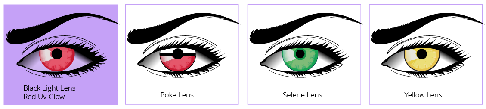

Halloween Eye Safety
October has arrived and that means many people are already starting to plan for upcoming costume parties and trick-or-treating for the Halloween season. This is why now is the time to remind the public about some very important precautions about eye safety since there are some common costume props and accessories out there can be very dangerous to your eyes.

Oct 15, 2017

Cosmetic Contact Lenses
One of the biggest costume-related dangers to your eyes and vision is cosmetic or decorative contact lenses. Decorative lenses can be a great addition to your costume, but they must be obtained safely and legally with a prescription, through a professional, authorized vendor.
The bottom line is that contact lenses are a medical device that are manufactured and distributed under very strict regulations. Even non-corrective contact lenses require an eye exam to measure your eye and fit lenses according to a prescription. Costume stores, beauty supply stores and similar websites are not authorized dealers of contact lenses, and over-the-counter contact lenses are not legal under any circumstances.
Beware of anyone advertising “one-size-fits all” lenses or promoting that you do not need a prescription to purchase. Never buy contact lenses that don’t require a prescription. You could be risking serious damage to the eye and even blindness.
When contact lenses are not fitted to your unique eye measurements by an eye doctor, they can cause dryness and discomfort as well as a corneal abrasion or a scratch on the front surface of the eye. Serious corneal abrasions can leave scars and create permanent vision damage. Further, unregulated contact lenses may not be manufactured with optimal materials that are flexible and breathable and can be applied and removed properly. There are stories of lenses being stuck to people’s eyes and causing serious damage. Even if you aren’t feeling pain, it is best to check with a qualified licensed contact lens fitter to confirm if the contact lens is causing any harm to the eyes.
Non-prescription contacts have also been shown to present a higher risk of eye infection. Serious infections can lead to vision loss, sometimes on a permanent basis. There are far too many stories these days of people that have used off-the-counter contact lenses that are now blind or suffering serious vision loss and chronic discomfort.
Don’t worry, you don’t have to forgo your red, devil eyes this year! Just be safe and plan ahead. There are many manufacturers of cosmetic lenses, and these can be obtained safely through an authorized contact lens dealer. Contact your eye doctor or local optician to find out more.
False Lashes
False eyelashes have become quite the rage in recent years but they carry a number of risks with them as well. First of all, they can damage the natural eyelash hair follicles, causing them to fall out, sometimes permanently. The chances of this increase when people sleep in their lashes or leave them on for extended periods of time. In addition to the aesthetic damage, this can be dangerous to your eyes because eyelashes are essential for protecting your eyes from sweat, debris, and dust. Without your eyelashes your eyes are at greater risk for infection and irritation.
False eyelashes can also be a trap for dirt, debris and bacteria which can enter your eye causing irritation and infections, along the lids or inside the eye itself. As we said above, severe infections can sometimes lead to vision loss.
Additionally, the glue that adheres the lashes to your eyelid can sometimes cause an allergic reaction in the skin around the eye or to the eye itself. The eye is one of the most sensitive areas of the body, so you want to keep any potential allergens or irritants far, far away.
Masks and Props
If your (or your child’s) costume includes a mask, fake face, hood or anything else that goes on your head, make sure that visibility isn’t impaired. Unfortunately, it’s common for children especially to trip and fall because they cannot see well. Also, use caution when using props such as plastic swords, pitchforks, guns, sports equipment which can easily cause a corneal abrasion or contusion to the eye if hit in the face.
Makeup
Lastly be careful about the makeup you apply around your eyes. Wash your hands before you apply eye makeup and don’t share makeup and brushes with others, as this can lead to the spread of infections such as conjunctivitis (pink eye). Make sure your makeup isn’t expired (mascara for example is recommended to throw away 2-4 months after opening) and try not to apply anything like eyeliner too close to the underside of the eyelid. Lastly, only use makeup intended for eyes in the area around the eyes.
When you are planning for this Halloween season, just remember that your vision is too high a price to pay for any great costume. Dress up safely and Happy Halloween!
Ready to see clearly?
Book a comprehensive eye exam with Carey Brooks, OD in Frisco, TX.